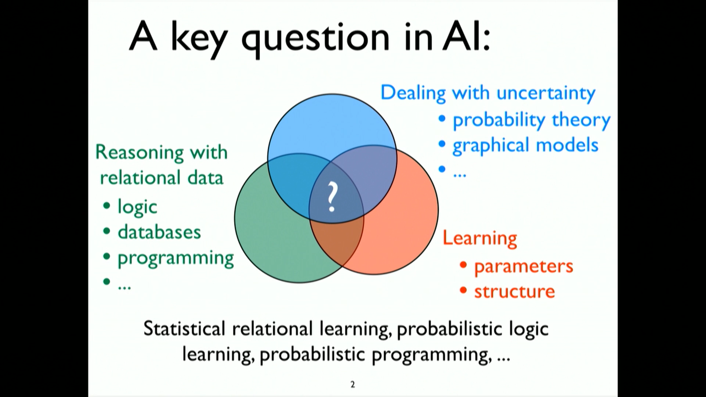
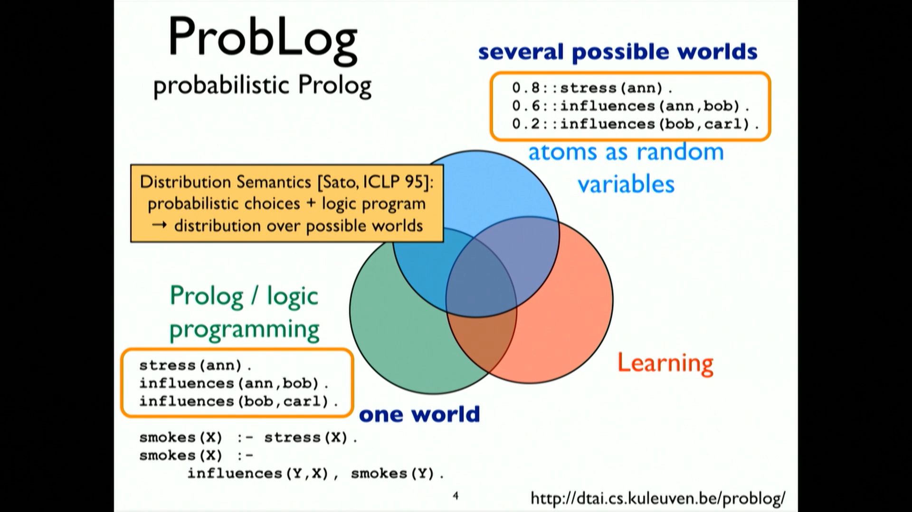
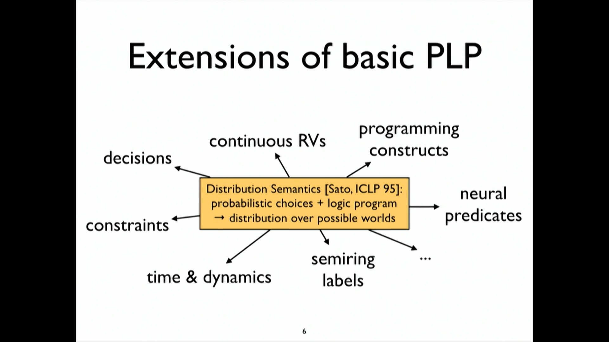
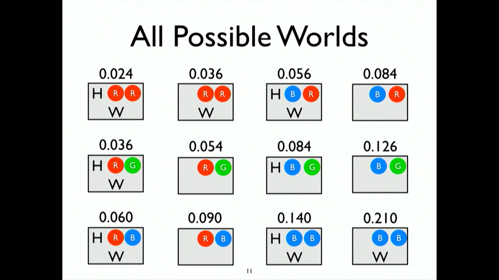
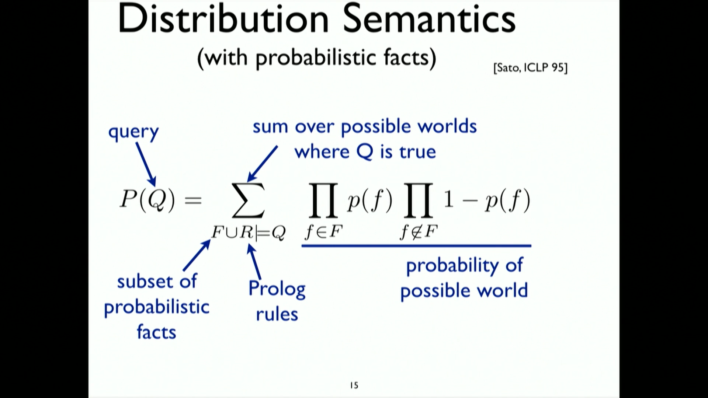
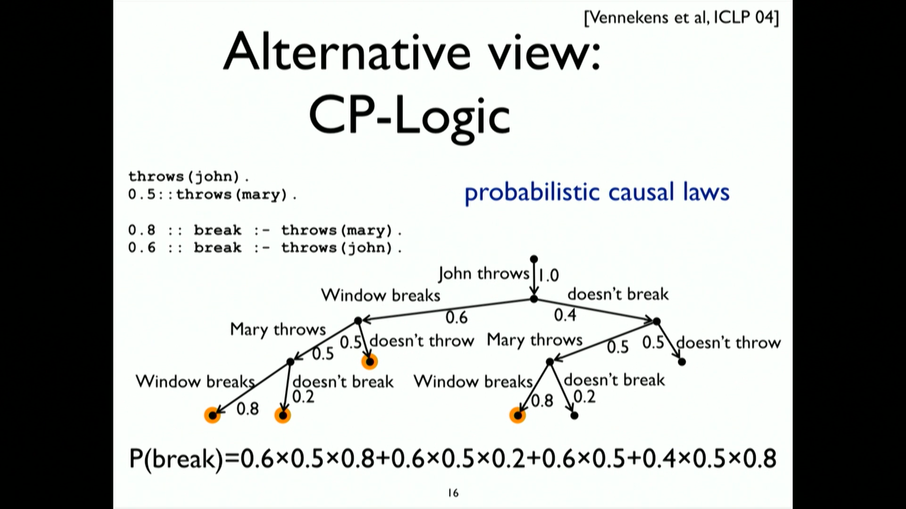
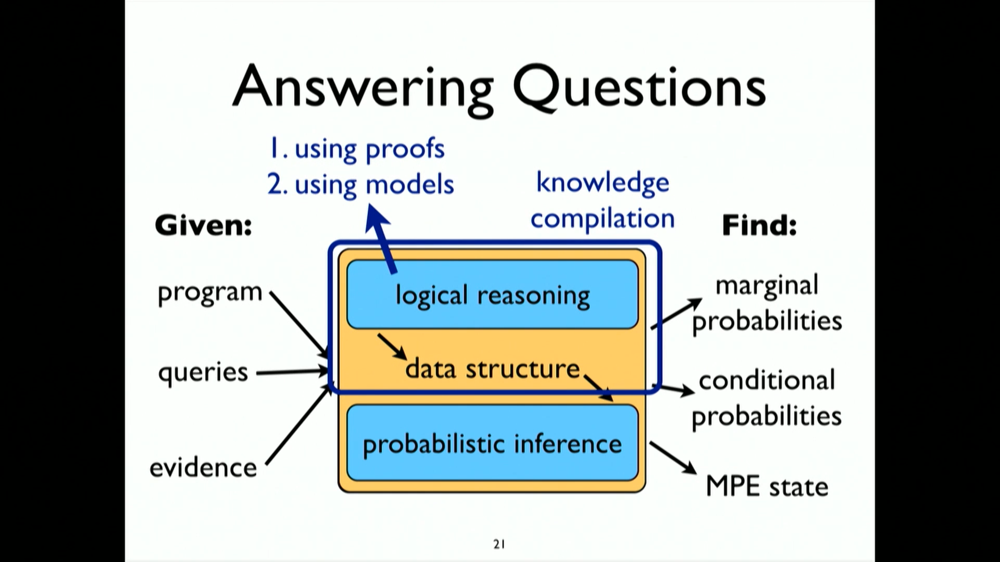

Probabilistic Logic Programming
Table of Contents
- 1. A key question in AI - Mixing Reasoning & Learning with Uncertainity
- 2. ProbLog - Probability associated with logic
- 3. ProbLog is one instance of a bigger family of Probabilistic Logic Programming
- 4. Other Extensions of basic PLP
- 5. Example - ProbLog by example
- 6. Distribution Semantics - (with probabilistic facts)
- 7. Alternative View - CP-Logic - Probabilistic Causal Laws
- 8. Both are same
- 9. Example 2 - Infinite Possible Worlds - A markov chain
- 10. Implementation
- 10.1. Rely in logical reasoning - not on sampling
- 10.1.1. Logical Reasoning : Proofs in Prolog - by backward chaining
- 10.1.2. If there is a proof of a logic query then the product of the probabilities of the steps of the proofs is the result of probabilistic query
- 10.1.3. For multiple proof don't just sum the probabilities of each proof - Disjoint-Sum-Problem
- 10.2. Knowledge compilation - get rid of the common parts of the proof (solves Disjoint-Sum-Problem)
- 10.3. Weighted Model Counting - is also related to this PLP
- 10.1. Rely in logical reasoning - not on sampling
- 11. Future Endeavours
https://www.youtube.com/watch?v=5g0Z5b77rOs&t=26s
1. A key question in AI - Mixing Reasoning & Learning with Uncertainity

- narrow down network of interaction
- build knowledge base based on automatically learned facts
- video recognition
2. ProbLog - Probability associated with logic
In prolog, world is modelled with facts and relations In problog, there is a probability associated with the facts to get a distribution over possible worlds.

3. ProbLog is one instance of a bigger family of Probabilistic Logic Programming
Distribution Semantics [Sato, ICLP 95]: probabilistic choices + logic program = distribution over possible worlds
e.g.
- PRISM
- multi-valued switches
- ICL
- probabilistic alternative
- ProbLog
- Probabilistic facts + annotated disjunctions
- LPADs
- annotated disjunctions
- CP-Logic
- causal probabilistic laws
3.1. Same idea: Take probabilistic choice, take logic logic program describing the consequences of those choice => distribution over possible world
4. Other Extensions of basic PLP

- basic is discrete RVs
- continuous RVs
- decision theory
- special ways to handle time & dynamics
- integrating PLP with deep learning => Neural Predicates
5. Example - ProbLog by example
A bit of gambling
Probabilistic Choices:
- toss (biased) coin & draw ball from each urn
- 30% balls are red, 70% are blue in one urn
- 20%,30% and 50% red, green, blue balls resp. in another urn
Consequences:
- win if (heads and a red ball) or (two balls of same color)
< Collapse code block
0.4 :: heads 0.3 :: col(1,red); 0.7 :: col(1,blue). 0.2 :: col(2, red); 0.3 :: col(2,gree); 0.5 :: col(2,blue). win :- heads, col(_, red). win :- col(1,C), col(2,C).
- First 3 statements are probabilistic choices.
- Last 2 lines are the consequences.
now we can ask probabilistic questions. e.g.
- probability of win?
- probability of win given some constraints.
- MPE - Most Probabilistic World .
5.1. One way is to randomly go over the choices

This example is small enough to list all possiblistic choices.
6. Distribution Semantics - (with probabilistic facts)

7. Alternative View - CP-Logic - Probabilistic Causal Laws

8. Both are same
9. Example 2 - Infinite Possible Worlds - A markov chain
< Collapse code block
0.5 :: weather(sun,0); 0.5::weather(rain,0). 0.6 :: weather(sun,T); 0.4:weather(rain,T) :- T>0, Tprev is T-1, weather(sun,Tprev). 0.2 :: weather(sum,T); 0.8::weather(rain,T) :- T>0, Tpreve is T-1, weater(rain,Tprev).
Last two lines are probabilities of weather based on the condtion of previous day's weather.
There are infinitely many possible worlds but for probabilistic queries finitely many possible world suffice to answer any ground query (e.g. weather of day 2).
10. Implementation
10.1. Rely in logical reasoning - not on sampling

0:14:48